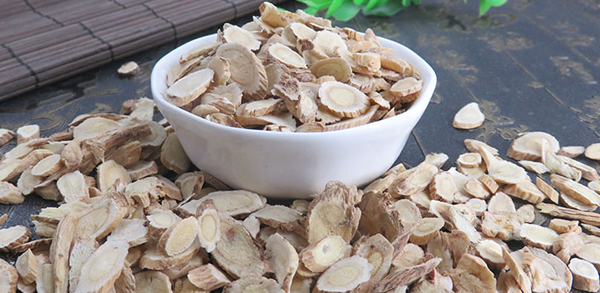

黄芪有着补气的功效，用黄芪泡水喝能够增强免疫力，补气养血。经过现代临床研究发现用黄芪泡水喝可以降血糖，治疗高血糖，缓解胃病的作用。喝黄芪水的禁忌主要是像阴虚血热的患者最好不要随意使用黄芪泡水，孕妇也不能随意使用黄芪泡水饮用。

黄芪泡水喝功效
1、补气增强免疫力
黄芪水有着补气的功效，像身体长期虚弱的都会有着气虚的症状，像呼吸短促，说话带喘，走两步就气喘吁吁。还有突然生大病，像中风后以及经历大型手术后都会有身体虚弱的情况，这样的可以用黄芪泡水喝，起到补气增强免疫力的作用。
2、补气养血
中医理论中认为气能生血，所以贫血的患者或者月经来玩之后的女性可以用黄芪泡水饮用，来帮助养血补血。
3、降血糖
现在研究确定了黄芪有着降糖的作用，所以像血糖较高的患者，或者有家族遗传糖尿病的患者以及糖尿病患者都可以使用黄芪来帮助降血糖。
4、治疗高血压
黄芪有着帮助降低高血压的功效，像高血压偏高的患者以及高血压患者可以使用黄芪泡水饮用。很多肥胖的中年人都有高血压、高血脂、高血糖的趋向以及疾病，所以中年肥胖患者可以使用黄芪泡水饮用。
5、补脾胃
脾胃不好、脾胃虚弱多是因为气血虚导致的，所以脾胃不好经常腹泻、呕吐、便秘的患者可以使用黄芪泡水饮用。
黄芪泡水喝的禁忌
1、体质偏热的人不宜饮用
黄芪虽然好，但是并不是什么样的人群都适合的，像体质偏热的人就不适合使用黄芪泡水喝。因为黄芪本身就性温，使用黄芪泡水喝很容易导致上火，如果体质本身偏热或者有热性疾病会导致病情加重。
2、孕妇不要饮用
黄芪是降糖、降脂的好药材，但是孕妇在怀孕期间最好不要随意使用任何药物，所以孕妇最好不要随意喝黄芪水。